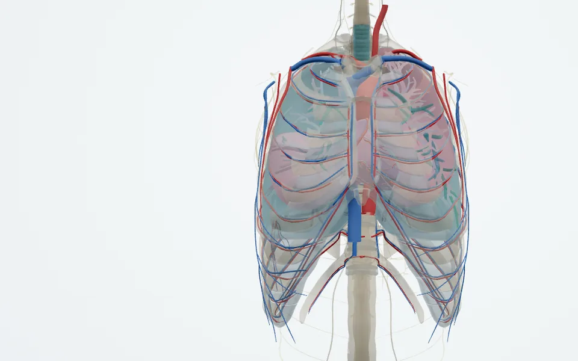
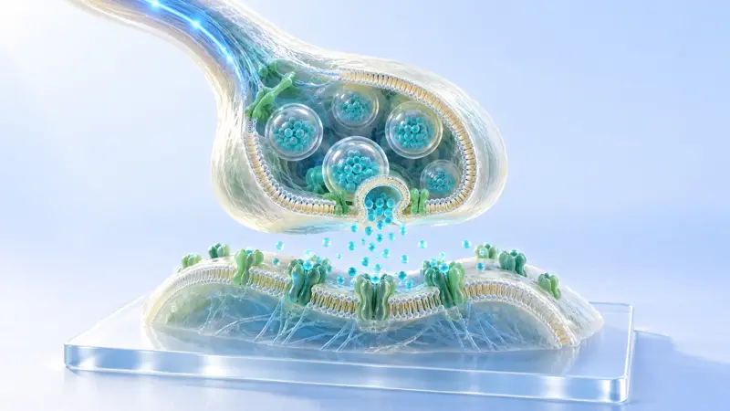

Bài giảng 3D · THCS & Sinh học
16 bài giảng 3D: 7 bài thư viện dùng được cho THCS 6–9, 4 bài 3D Sinh học (gồm Cơ thể người 3D), 5 bài thư viện Sinh học, kèm lộ trình Sinh học tế bào lớp 10. Mỗi bài có chế độ học theo bước và chế độ lên lớp.
Bài học 3D · Sinh học

Hành Trình Vào Tế Bào
Tế bào nhân thực đang hoạt động; phóng liền mạch xuống ribosome thật (PDB 3J7R).

Vào Ty Thể
ATP synthase thật (PDB 6J5I): dòng H⁺ làm vòng c quay, ba vị trí β lần lượt tạo ATP.

Neuron và xung thần kinh
Xung nhảy cóc qua eo Ranvier, điện thế màng theo từng pha.

Cơ thể người 3D
2.900 cấu trúc giải phẫu thật, 140 chuyển động sinh lí, 6 chủ đề hiển vi.
Lộ trình Sinh học tế bào · Lớp 10
Thư viện · THCS 6–9 (7 bài)

Luyện gang trong lò cao
Một đống quặng đổ từ đỉnh lò xuống, sao vài giờ sau đã thành dòng gang lỏng, lại còn càng chạy càng tiết kiệm?

Luyện kim: điện phân muối nóng chảy + nhiệt nhôm
Vì sao nhôm chỉ có thể dùng điện để “tách” ra, còn sắt lại có thể bị nhôm “đẩy” ra?

Sản xuất xi măng
Một xe đá và đất, vì sao nghiền, nung, rồi nghiền lại là thành xi măng đủ sức đỡ cả con đập?

Các nhân tố hình thành đất chủ yếu và quan sát phẫu diện đất
Đất vùng Đông Bắc Trung Quốc vừa đen vừa màu mỡ, vì sao đất phương nam lại tương đối nghèo?

Hệ quả địa lí của chuyển động Trái Đất
Cùng một thời điểm, vì sao Bắc Kinh đang giữa trưa mà New York lại nửa đêm, và vì sao ban ngày mùa hạ dài hơn mùa đông?

Quá trình và ý nghĩa địa lí của vòng tuần hoàn nước
Sông ngòi không ngừng đổ ra biển, vì sao nước biển không nhiều thêm?

Đai khí áp, đới gió và hoàn lưu ba vòng
Vì sao đoàn thuyền Magellan có chặng ngược gió, có chặng xuôi gió, nhưng tới gần 30°S lại gần như không nhích được?
Thư viện · Sinh học (5 bài)

Các điều kiện ảnh hưởng đến hoạt tính enzyme
Cùng một ống enzyme, vì sao cho vào nước sôi thì không cứu lại được nữa, còn cho vào nước đá thì vẫn “tỉnh lại” được?

Quan sát nguyên phân ở tế bào vùng mô phân sinh đầu rễ
Trên một đầu rễ hành, những tế bào nào đang phân chia? Mỗi kì của một lần phân chia kéo dài bao lâu?

Sự hình thành và dẫn truyền xung thần kinh
Xuất phát trong vòng 0.1 s sau tiếng súng lệnh là tính phạm quy (SGK tr. 27) — hưng phấn “chạy” qua cơ thể như thế nào?

Sự hút nước và mất nước của tế bào thực vật
Rau ngâm nước sạch thì cứng giòn, rắc muối thì chảy nước — tế bào thực vật hút nước và mất nước như thế nào?
Vận chuyển các chất qua màng
Cùng một màng tế bào, vì sao oxygen tự đi qua được, glucose phải nhờ vài protein giúp sức, còn K⁺ lại đi vào được ngược chiều nồng độ?